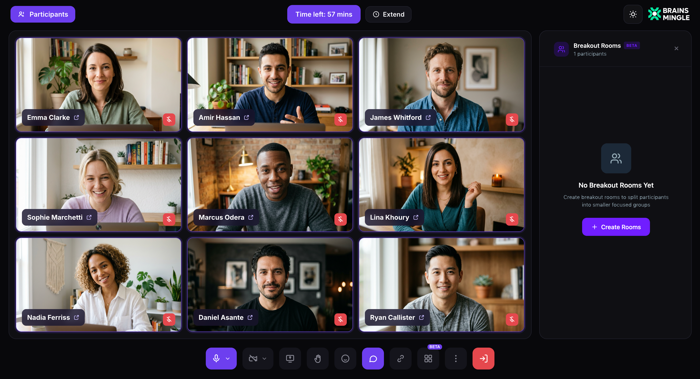
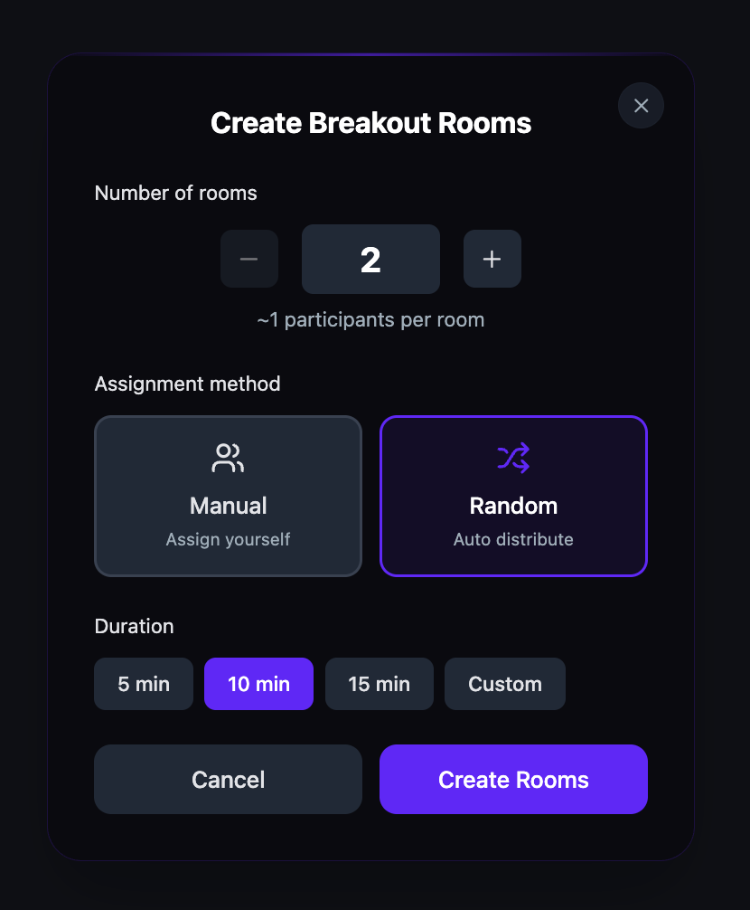

Create breakout rooms
Breakout rooms split participants into smaller groups for focused discussions during a live session. Set the number of rooms, choose manual or random assignment, set a duration, and launch — all from the call toolbar.
Before you get started
- You must have a host or moderator role to create breakout rooms.
- You must be in an active live session. The Breakout Rooms control is in the call toolbar. See Use the video call toolbar for a full overview.
- Breakout rooms is a Beta feature. Availability may vary.
Open the Breakout Rooms panel
- Click the Breakout Rooms icon in the call toolbar.
- The Breakout Rooms panel opens on the right side of the screen.
- Click + Create Rooms.

Configure breakout rooms
- Set the Number of rooms using the + and − controls.
-
Choose an Assignment method:
- Manual — assign participants to rooms yourself.
- Random — the platform distributes participants automatically.
-
Set the Duration:
- 5 min, 10 min, or 15 min — preset durations.
- Custom — enter a custom duration in minutes.
- Click Create Rooms.

Tip: Use Manual assignment when you need specific groupings (e.g., by topic or role). Use Random for networking-style breakouts where mixed groups are the goal.
During breakout rooms
When breakout rooms are active:
- Participants leave the main session view and join their assigned room.
- The host remains in the main session and can monitor all rooms from the Breakout Rooms panel.
- The host can broadcast messages to all rooms simultaneously.
- A timer counts down the remaining duration. When the timer expires, all participants return to the main session automatically.
Please note: Participants cannot switch rooms on their own. Only the host can reassign participants between rooms.
Close breakout rooms
Breakout rooms close automatically when the timer expires. To close them early, click Close Rooms in the Breakout Rooms panel. All participants return to the main session immediately.
Tip: You can create a new set of breakout rooms after closing the current ones, allowing multiple rounds of group discussions in a single session.